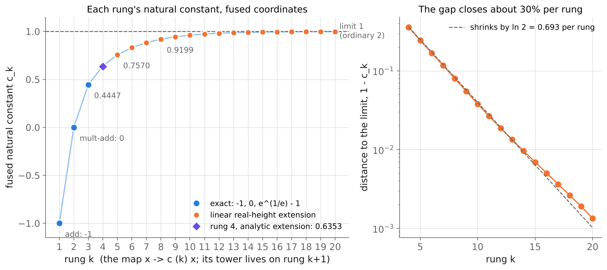
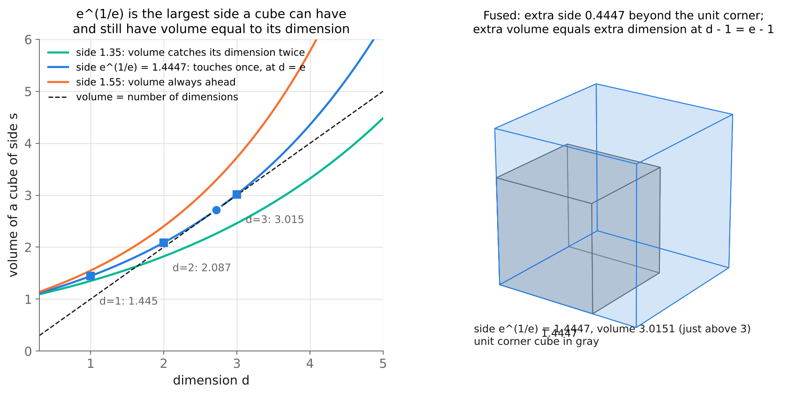
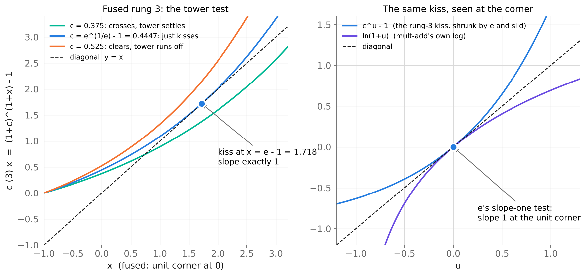
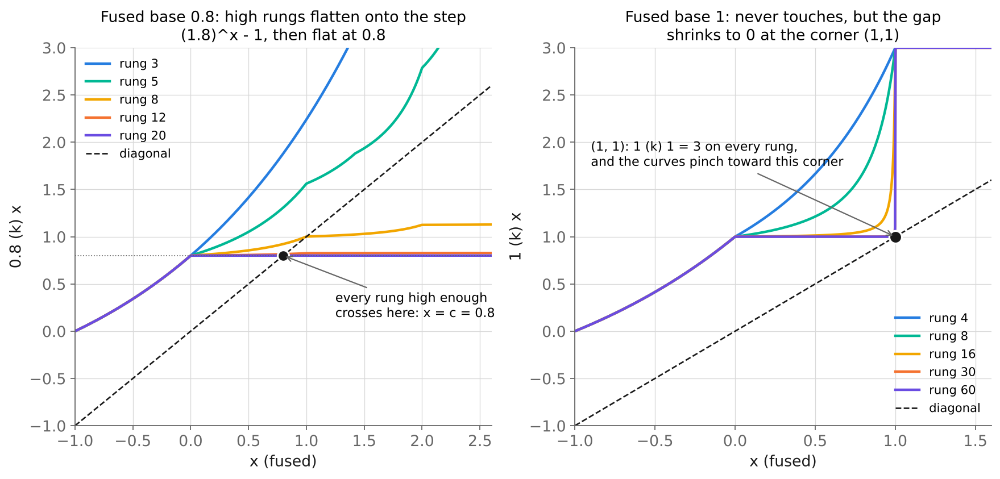
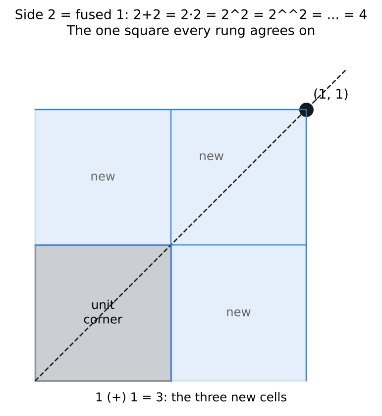
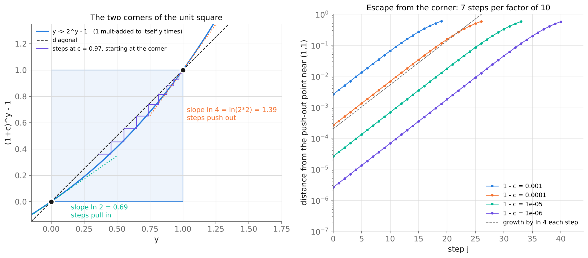
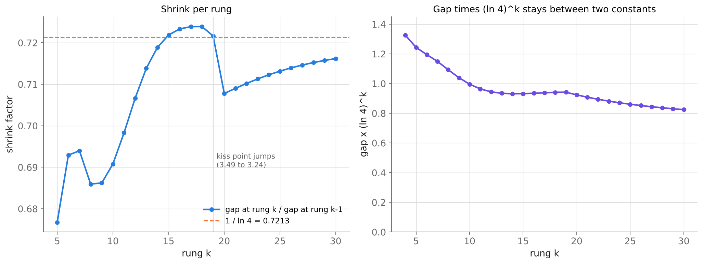

The test that generalizes is the kiss: the largest base whose infinite tower on the next rung still settles, which is where the rung's curve just touches the diagonal. In fused coordinates the constants run −1, 0, 0.4447, 0.6353, 0.757, 0.832, … and they converge to 1 (ordinary coordinates: 0, 1, e1/e, 1.6353, … → 2).
Fusing doesn't change them: sliding by one moves every kiss by exactly one. The limit 1 is the far corner of the 2×2 square, the one place where every rung agrees: 1 (k) 1 = 3 on all of them.
The gap to 1 shrinks by 1/ln 4 ≈ 0.721 per rung, about 28%. That rate is proved, up to a constant factor, and it comes from the slope of the circle operation's power curve at the corner (1, 1).
Rungs 1 to 3 are exact. Rung 4 is known in the literature. From rung 5 up, heights between whole numbers need a rule, and I used the standard linear one; the limit 1 is proved for that rule.

Fused rung k is the ordinary rung slid so the unit corner sits at 0, the same definition as the Navier–Stokes rungs page:
| Test | What it gives on rung 3 | Does it climb? |
|---|---|---|
| Slope one at the start (e's own test: bˣ has slope 1 at x = 0) | e | No. Above rung 3 the answer depends on the rule for in-between heights. The linear rule gives e again on every rung; the analytic rule doesn't even give e (slope 1.0918 there). |
| Cut finer and finer (1/n combined n times) | e, for the circle operation ∘₁ (called mult-add before 1.0) | No. It works because the circle operation is associative. The power rung isn't, and a tower of n copies of 1 + 1/n just sinks to 1. |
| The kiss (largest base whose next-rung tower settles: the curve x ↦ c (k) x meets the diagonal with value x and slope 1 at once) | e1/e, kissing at x = e | Yes. It makes sense on every rung, it's exact on the first three, and sliding keeps it. e's slope test turns out to be this same kiss at rung 3, shrunk by e (next section). |
The slide keeps kisses because it moves the curve and the diagonal together: the gap to the diagonal and every slope are unchanged. So each fused constant is the ordinary constant minus 1, and its kiss point is the ordinary one minus 1. Lean proves the whole-number form (slide_fixed, slide_gap, slide_step, slide_kiss).
Each number is checked at 40 digits in constants.py by solving "value = x and slope = 1" together, then confirming the curve crosses just below the base and clears just above it.
| Rung | The map | Ordinary | Fused | Kiss at (fused x) | Status |
|---|---|---|---|---|---|
| 1 | add: x ↦ b + x | 0 | −1 | everywhere (adding 0 is the diagonal) | exact |
| 2 | multiply: x ↦ b·x | 1 | 0 | everywhere (the circle operation by 0 is the diagonal) | exact |
| 3 | power: x ↦ bˣ | e1/e = 1.444667861009766 | 0.444667861009766 | x = e − 1 = 1.71828 | exact |
| 4 | tetration: x ↦ b↑↑x | 1.635324496715 | 0.635324496715 | 2.0885 | analytic heights (known) |
| 4 | same, linear heights | 1.640974559105 | 0.640974559105 | 2.3101 | linear heights |
| 5 | pentation | 1.757030666276 | 0.757030666276 | 2.3189 | linear heights |
| 6 | hexation | 1.831639599438 | 0.831639599438 | 2.3335 | linear heights |
| 7 | 1.883163228580 | 0.883163228580 | 2.5808 | linear heights | |
| 8 | 1.919856257590 | 0.919856257590 | 2.5985 | linear heights | |
| 10 | 1.962009955137 | 0.962009955137 | 2.5796 | linear heights | |
| 15 | 1.993055409308 | 0.993055409308 | 2.5135 | linear heights | |
| 20 | 1.998655543930 | 0.998655543930 | 2.2445 | linear heights | |
| ∞ | 2 | 1 | — | proved (linear heights) |
Rung 4 analytic value: published as 1.63532449671527639934534 (Tetration Forum, using Kneser's tetration). My own check with Robbins' natural super-logarithm gives 1.635324496701 with 40 terms, closing in on it. The linear rule is 0.35% higher on rung 4. Nobody I found has computed rung 5 or higher with the analytic rule.
The power rung asks when bˣ = x. Read b as a cube's side and x as its number of dimensions: when can a cube's volume equal its dimension count? That needs b = x1/x, and that is largest at x = e, with side e1/e = 1.4447. A square of that side has area 2.087, a cube 3.015, both just above their dimension; at dimension e they meet exactly.
In fused coordinates: extra side 0.4447 beyond the unit corner, and the extra volume equals the extra dimension at e − 1.
e and e1/e are one kiss at two scales. Shrink the rung-3 kiss by e and slide it to the corner, and it becomes exactly eu − 1 meeting the diagonal at the unit corner with slope 1, which is e's slope test and the inverse of the circle operation's own log ln(1+u):
So they aren't two independent constants. That's why the climb starts here.
The tower also has a lower edge, e−e = 0.0660 (fused −0.934), and a tower of 1/e settles on the omega constant 0.5671. Both check to 40 digits.


The proof is a squeeze between a ceiling and a rising floor.
Base 1 (ordinary 2) stays above the diagonal on every rung, so its tower always runs off and no constant can pass 1. Lean proves the whole-number version: on every rung from power up, Hk(2, n) > n, and the base-2 tower climbs at every step. It also proves 2 (k) 2 = 4 on every rung, so fused 1 (k) 1 = 3: the 2×2 square that every rung agrees on.
On the second unit of height, every rung has an exact closed form (linear rule):
The inner map s fixes 1 and pulls every height between 1 and 2 toward it whenever b is below 2. So as the rungs climb, the curve flattens onto a step: bx on the first unit, then flat at b. A flat line at height b must cross the diagonal at x = b, so for any base below 2 the tower settles once the rung is high enough. That pushes the constants past every number below 2. Squeezed against the ceiling, they converge to 2, which is fused 1.
The gap to 1 shrinks by a factor of 1/ln 4 = 0.7213 per rung. The next section proves it. (An earlier version of this page guessed ln 2 = 0.693 here. That was the wrong corner.)
Two honest limits. The floor argument uses the linear rule for in-between heights; it should carry over to rules that behave like it on the first unit of height, but I haven't proved that, and I haven't checked the analytic rule. And the kiss point itself doesn't settle neatly under the linear rule: it sits near fused 2.2 to 2.6, by one of the rule's corners, while the base-1 curve pinches toward the corner (1, 1).


Each rung shrinks the gap 1 − ck by a factor of 1/ln 4 = 0.7213, about 28%. The reason is one slope: the circle operation's power curve leaves the corner (1, 1) with slope ln 4 = ln(2·2).
Theorem (linear rule). There are constants A, B > 0 so that for every rung k ≥ 5
So the k-th root of the gap tends to exactly 1/ln 4. In plain terms: about seven rungs for each extra digit of closeness, because (ln 4)7 = 9.8.
In fused coordinates the inner map from the closed form is y ↦ (1 + c)y − 1. For whole y that is c combined by the circle operation with itself y times, the same power that built e. At c = 1 the curve 2y − 1 runs through both corners of the unit square.
Rung k is rung 3 run after k − 3 steps of this map. The tower test at rung k asks one thing: starting at the corner (1, 1), have k − 3 steps carried you far enough from it?
At c = 1 you never move: (1, 1) is a fixed point, which is why fused base 1 never settles. Just below 1, the corner splits. A push-out point sits a distance of about 2.6 × (1 − c) beyond it, and the steps drift away from it, the distance growing by ln 4 each time. Getting a fixed distance away takes log(1/(1 − c)) / log(ln 4) steps. A rung allows k − 3 steps, so the threshold sits where (1 − c) is about (ln 4)−k.
The number is worth a second look: 4 is the number every rung agrees on, 2 (k) 2 = 4, and the closing rate is one over its logarithm.

Ordinary coordinates: base b = 1 + c, gap ε = 2 − b, inner map s(x) = bx−1, orbit o0 = 2, oj+1 = s(oj), and m = k − 3.
ladder; the identity is checked in Python with error exactly 0.Steps 3 and 4 trap the threshold between two fixed escape heights, and step 2 turns each height into a step count of log(1/ε)/log(ln 4) + O(1). That is the theorem.
| Claim | Status |
|---|---|
| Closed form's structure; escape-count template; integer facts behind 0.69 < ln 2 < 0.7 and 2(ln 2)2 < 1 | Core Lean, no sorry (lean/ClosingRate.lean) |
| Escape-time estimate, steps 3 and 4, so the sandwich A(ln 4)−k ≤ gap ≤ B(ln 4)−k | Proved on paper above, not machine-checked |
| Closed form exact; constants to rung 30; at every threshold from rung 6 to 30, step 3's test holds (om+1 1.34 to 1.45, below logb 3.5) and step 4's test fails as it must (om−2 1.67 to 1.83, above logb 3) | Python (rate_scan.py, rate_checks.py) |
| That the ratio of consecutive gaps tends to 1/ln 4, and that gap × (ln 4)k settles to one constant | Open. At rung 30 the ratio is 0.7162 and still rising; gap × (ln 4)k is 0.82 and still drifting down |

Running e's own test (slope 1 at height 0) on the higher rungs: with the linear rule every rung equals bˣ on the first unit of height, so the test picks e on every rung. With the analytic rule, base e's tetration has slope 1.0918 at 0, so the test isn't even tied to e there. Either way it doesn't produce a ladder. In fused coordinates e − 1 = 1.71828 shows up instead as where the rung-3 kiss happens.
No lead here at the level of the KdV soliton cube. The cleanest small finding is the one above: e and e1/e are the same kiss at two scales, and the climb ends at the one square every rung agrees on.
lean/FusedConstants.lean: core Lean 4 only, no mathlib, no sorry, only Lean's standard axioms. Checked with Lean 4.37.0-rc1.
mult_add: (1+a)(1+b) − 1 = a + b + ab, so fused rung 2 is the circle operation.slide_fixed, slide_gap, slide_step, slide_kiss: sliding by one moves fixed points by exactly one and keeps every gap and every step, so a kiss survives the slide.rung1_base0, rung2_base1: adding 0 and multiplying by 1 are the diagonal, so the first two constants are exact.all_rungs_two_two, fused_one_one: 2 (k) 2 = 4 and fused 1 (k) 1 = 3 on every rung.base_two_clears, base_two_tower_climbs: from the power rung up, the base-2 curve is above the diagonal at every whole height, and the base-2 tower climbs at every step. This is the whole-number skeleton of the ceiling.lean/ClosingRate.lean, same standards:
ladder: if each rung is the rung below run after one step of s, then rung j is the bottom rung run after j steps. This is the structure of the closed form on the second unit of height. It uses no axioms at all.grow: if each step multiplies a gap by at least p/q, then j steps multiply it by at least (p/q)j. This is the counting template for the escape time.two_lt: 2·1000700 < 1001700. e_pow_lt: 2718281969 < 2100·10483. With two textbook facts that are not in the file, (1 + 1/n)n < e and e < 2.7182819, these give 0.69 < ln 2 < 0.7, so 0.714 < 1/ln 4 < 0.7247 and 2(ln 2)2 < 0.98.Not in Lean: core Lean has no real numbers, so the in-between heights, the kiss itself (value and slope together), e1/e, 1.6353, the closed form on the second unit, the limit, and the two sides of the rate sandwich are checked in Python and argued here.